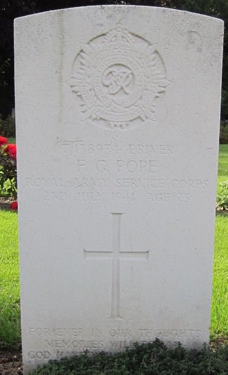
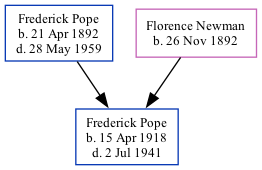

Frederick George Pope 1918 - 1941
[ Home ] | [ Calendar ] | [ Surnames Index ] | [ Family History ]The 2nd of 3 children of Frederick Pope and Florence NewmanFrederick Pope, the fourth cousin once-removed on the father's side of Nigel Horne, was born in Brentford, London, England on Apr 15, 19181,2,3. Like his father, he was a fruiterer. On Sep 29, 1939, he lived at 86 District Road, Sudbury, London, England1. During 1941, he was serving in the army (regiment: Royal Army Service Corps; Rank: Driver; Service number: T/138934).
He died on Jul 2, 1941 at Ballyhose, Enniskillen, Fermanagh, Northern Ireland2,4,5 and was buried at Alperton Cemetery, Wembley, London on Jul 9, 1941.
Parents
- Frederick Ernest was born on Apr 21, 1892
- Florence Caroline was born on Nov 26, 1892
Citations
- 1939 Register - Findmypast (was the son of the head of the household)
- Commonwealth War Graves Commission Debt Of Honour - Findmypast
- England & Wales births 1837-2006 - Findmypast
- Army Roll Of Honour 1939-1945 - Findmypast
- World War 2 Allies Collection - Findmypast
Media
Frederick George Pope - Gravestone

Army Roll of Honour 1939-1945 Transcription - GBM-WWIIARH-0134930
England & Wales births 1837-2006 Image - BMD-B-1918-2-AZ-000985
1939 Register - TNA/R39/0946/0946I/016/30
Commonwealth War Graves Commission Debt Of Honour - GBM/CWGC/ROLLOFHONOUR/001549536
World War 2 Allies Collection - WW2/07074579
England & Wales Government Probate Death Index 1858-2019 Image - GBOR-GOVPROBATE-1965-P006949-POPE-1965-2
Family Tree
Generated by ged2site. Last updated on Nov 13, 2024